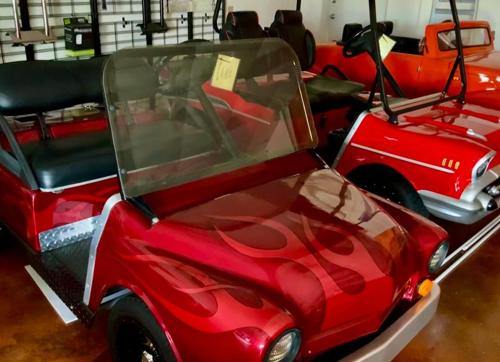

Golf Carts in League City, TX
Master-planned neighborhoods, a marina community, and a short hop to our Bacliff shop.
When a cart rolls past the fountain at Tuscan Lakes or slips into a parking space at South Shore Harbour, nobody looks twice. League City has become one of the most cart-friendly suburbs in the Houston Bay Area, not because it is a beach town, but because so much of daily life happens inside large, connected neighborhoods. Parents shuttle kids from Westover Park to a playground. Couples ride over to dinner along the FM 518 corridor. Weekend guests borrow the six-seater to see the marina. That is the pattern we hear most often from League City customers at Golf Carts of Texas.
We are a family-owned dealer, custom builder, and service shop on Hwy 146 in Bacliff, about eight miles and fifteen minutes from the middle of League City. The main location is 3615 Hwy 146. Call the office at 281-559-3171 or the shop cell at 832-814-0452. If you already make regular trips to Galveston Island, we also keep a location at 3538 Broadway; that run is about twenty-nine miles and thirty-five to forty minutes, so it is a helpful second stop rather than the default one for most League City households.
The city's map is a patchwork of master-planned communities and older streets that grew up around Clear Creek. Tuscan Lakes, Hidden Lakes, The Victory Lakes, Marbella, Newport, Palomino, and the neighborhoods around South Shore Harbour each have their own rhythm, but they share long interior roads, pocket parks, and neighbors who already own a cart. South Shore Harbour adds a marina and a golf course, which is why we see as many lifted four-seaters as we do family six-seaters. Plenty of customers also want something quieter and lower for a tight garage in an older pocket off FM 518 or near Hometown Heroes Park.
A cart here is rarely just a toy. It is how people get to the pool, the mail kiosk, a friend's driveway, or a Saturday youth game without pulling a truck out of the garage. We sell and service new carts from Tomberlin, Star EV, NIU EV, Solana, Bintelli, ActivEV, and Aries EV, and we still take in used Club Car and E-Z-GO trade-ins. If you want a color-matched custom build, a street-legal low-speed vehicle setup, or a straightforward used cart that is ready this week, we can walk you through what is actually on the lot.
Bring the neighborhood guidelines if you have them. Some associations care about lighting, speed, or whether a cart is lifted. We cannot speak for every HOA in League City, but we can help you pick a setup that has a better chance of fitting the way you actually live here.

Carts we recommend for League City
These are models we sell every week, with official photos and in-site specs. See the full new golf cart lineup or check current inventory for what is on the lot today.


Street-legal carts in League City
If you want to take a cart beyond a private neighborhood, ask us about a street-legal low-speed vehicle, often called an LSV. In Texas, LSVs are generally limited to roads posted 35 mph or less, and the cart has to be properly equipped and titled for on-road use. League City has its own local rules on top of that, and those rules can change, so we do not quote a city ordinance here. Check with the City of League City, and we will help you understand the equipment side before you buy.
Next step
Visit, call, or get a quote
See what is on the lot, apply for financing through Octane, or tell us what you are looking for.
League City golf cart questions
How far is Golf Carts of Texas from League City?
Our main shop in Bacliff is about 8 miles and 15 minutes from central League City. The Galveston shop on Broadway is about 29 miles and 35 to 40 minutes.
Do League City neighborhoods allow golf carts?
Many master-planned communities around League City already have carts on the streets, but each HOA writes its own rules. Bring your guidelines and we can talk through lighting, lifts, and street-legal equipment.
Can I finance a cart for a League City home?
Yes. Financing applications are through Octane. You can apply online, then let us know so we can match the cart and any custom work to your approval.
Do you service carts that already live in Tuscan Lakes or South Shore Harbour?
We service all makes and models at the Bacliff shop, including carts we did not originally sell. Call the shop cell at 832-814-0452 to talk through a drop-off or pickup.
Looking for another city? See all of our areas we serve.